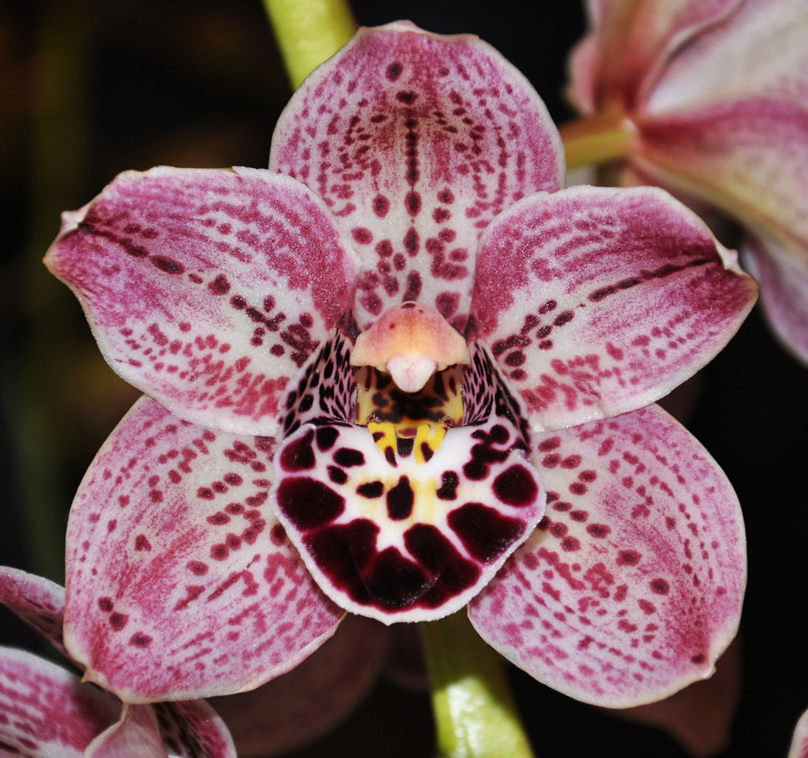

Anatomy of an Orchid
Orchids have a unique flower structure which consists of four main parts. The orchid flower is typically has an outer whorl of three sepals, an inner loop of three petals, a single large column in the center, and an enlarged bottom petal called a lip or labellum. The overall flower shape is characteristically bilaterally symmetrical (the left and right halves of the blossom are mirror images), a necessity for reliable pollination by bees.
The sepals are the protective cover of the flower bud. When the flower opens, the sepals may become enlarged and colored. In most species, the sepals are equal sized and look like petals. In some species, however, the top, or "dorsal" sepal becomes very large and showy, the two lower "lateral" sepals are sometimes fused into one structure, and in other species all three sepals are fused forming a bell-shaped structure around the flower. In some species, the display of the sepals completely overwhelm the actual flower.

The two lateral petals flank the greatly enlarged flamboyant bottom labellum, which is usually highly modified to attract and, in some cases, trap potential pollinators. The lip may be differently colored or marked, ruffled or pouch shaped, decorated with crests, tails, , hairs, fans, or other decorations attractive to their selected pollinator.
The orchid's reproductive system is combined into a single column. This is the primary identification feature of an orchid. At the top of the column is the anther, which contains packets of pollen and below the anther is the stigma, a shallow, sticky cavity in which the pollen is placed for fertilization.
Sepals: Although they may look like petals, they are actually the glorified remains of the flower bud. There are usually three of approximately equal size.
Petals: Orchids always have three petals. Two are "normal," and the third becomes a highly specialized structure called a lip.
Lip or Labellum: The lower petal of an orchid. Used by the flower to provide a “landing platform” for its pollinator.
Column: A finger-like structure that carries the orchid's reproductive system--the stigmatic surface and the pollinia located under the anther cap.